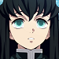

Actors |
||||||
|
Demon Slayer is an anime that exists in a world where Demons are a common problem. The King of Demons comes along and slaughters them all, except for his younger sister, who is turned into a demon. Tanjiro sets out to find the King of Demons and return his sister's humanity - by joining the Demon Slayer Corps. The voice actors did a great job. There are four main voice actors for Demon Slayer. They are Natsuki Hanae (Tanjiro Kamado), Akari Kitō (Nezuko Kamado), Hiro Shimono (Zenitsu Agatsuma), Yoshitsugu Matsuoka (Inosuke Hashibira). |
||||||
|
Reach out to us by email at hkong44@uwo.ca |
| Image | Character | Anime dubbers | Anime dubbers(EN) | Episode | Audio | |
|---|---|---|---|---|---|---|
| Tanjiro Kamado | Natsuki Hanae | Zach Aguilar | 1+ | |||
| Nezuko Kamado | Akari Kitō | Abby Trott | 1+ | |||
| Zenitsu Agatsuma | Hiro Shimono | leks Le | 11+ | |||
| Inosuke Hashibira | Yoshitsugu Matsuoka | Bryce Papenbrook | 11+ | |||
| Giyu Tomioka | Takahiro Sakurai | Johnny Yong Bosch | 1+ | |||
| Kyōjurō Rengoku | Satoshi Hino | Mark Whitten | 22-Mugen Train | |||
| Tengen Uzui | Katsuyuki Konishi | Ray Chase | 22-Kimetsu no Yaiba Yukaku-hen | |||
| Shinobu Kocho | Saori Hayami | Erika Harlacher | 22+ | |||
| Mitsuri Kanroji | Kana Hanazawa | Kira Buckland | 22+ | |||
| Gyōmei Himejima | Tomokazu Sugita | Crispin Freeman | 22+ | |||
|  | Muichiro Tokito | Kengo Kawanishi | Griffin Burns | 22+ | ||
| Obanai Iguro | Kenichi Suzumura | Erik Kimerer | 22+ | |||
| Sanemi Shinazugawa | Tomokazu Seki | Kaiji Tang | 22+ | |||